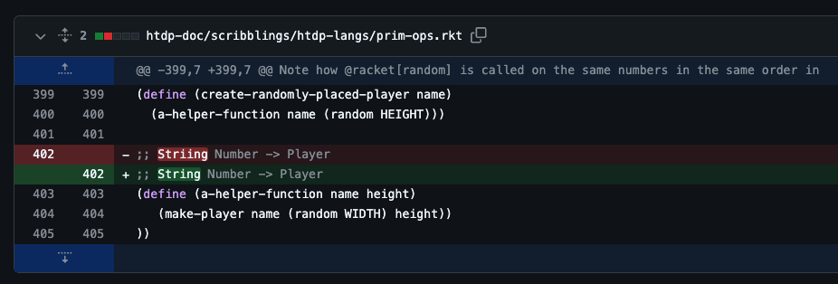
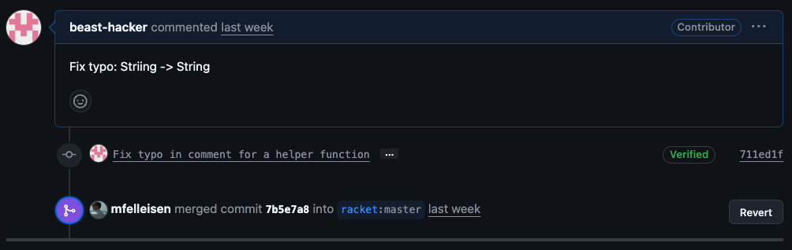
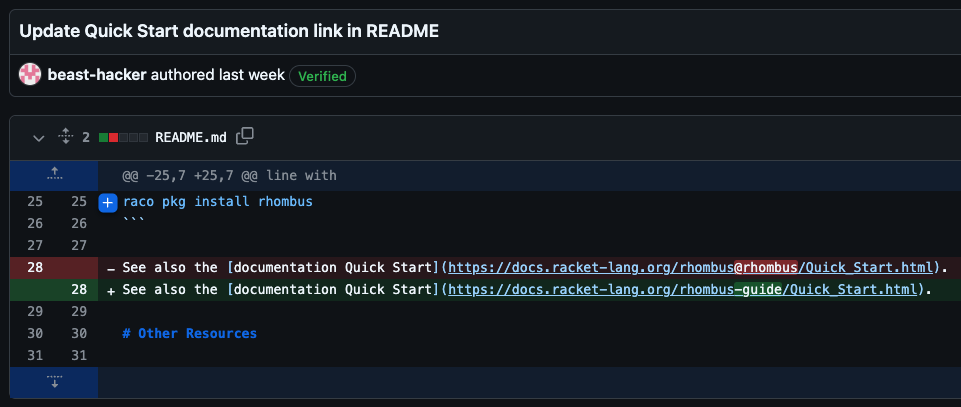
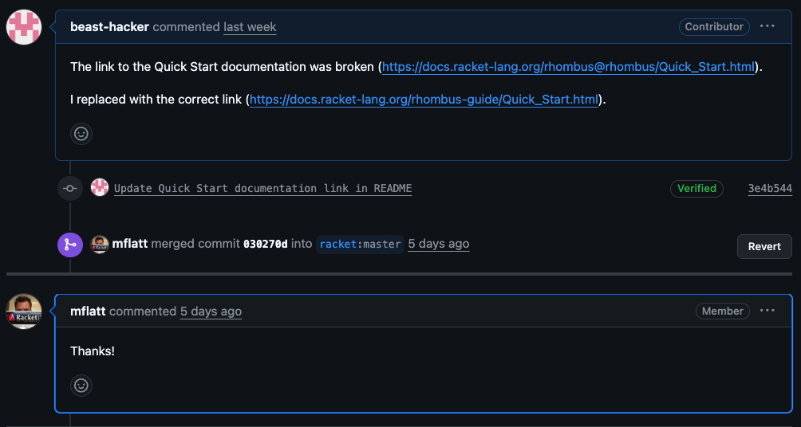

I’m currently learning Racket by working my way through How to Design Programs.
I am not an expert programmer. In fact, I am a serial language-hopper who, in 2025 alone, has dabbled in Python, Elixir, Common Lisp, Rust, and now Racket. My skills are probably still on the lower-left slope of Dunning–Kruger. But while my programming experience is shallow, my tutorial experience is deep. I’ve explored everything from Automating the Boring Stuff to Rustlings. So I don't think I'm totally deluded in calling How to Design Programs one of the best beginner resources ever.
It spans ~800 pages of clear, well-structured lessons, with exercises that hit the sweet spot: challenging but not discouraging. It has fun libraries that allow you to mess with graphics and create little games almost immediately. It comes paired with DrRacket, a distraction-free IDE that (while not exactly Neovim) lets you focus on the language rather than the tooling. And oh, by the way, it's all free.
About 100 pages in, I started to feel a weird moral obligation to give something back.
So I learned some GitHub basics, opened the Racket org's repos, and went bug hunting. I was looking to contribute something modest, maybe a patch to Racket's thread scheduler to stop it from triggering pinsyscall violations on my Luna-88k. But I stumbled upon something far more insidious, which luckily I was equipped to handle. (See racket/htdp pull request #251)

Given the seriousness of the issue, it’s no surprise that the core team swooped in immediately with the merge. This must be what it feels like to set up LeBron for a dunk:

Naturally, emboldened by my success, I immediately ventured to the bleeding edge of the Racket ecosystem and contributed to Rhombus.

But was I flying too high?

Apparently not. Boom. Merged. Still hot.
All kidding aside, How to Design Programs is such a high-quality resource that it made me feel guilty for just consuming it. It compelled me to try to contribute to the Racket community, even if my contributions so far amount to little more than spell-check. I expect my core contributor badge any day now.